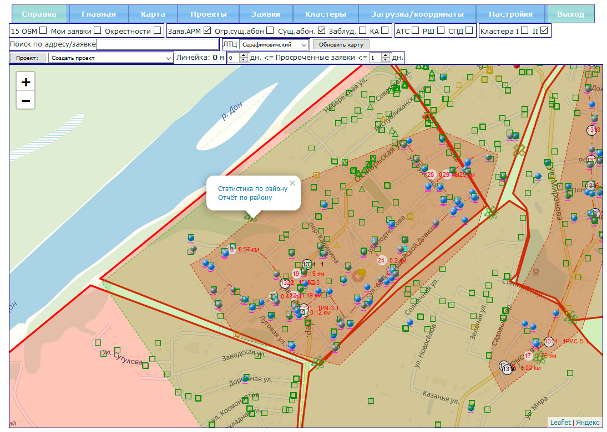
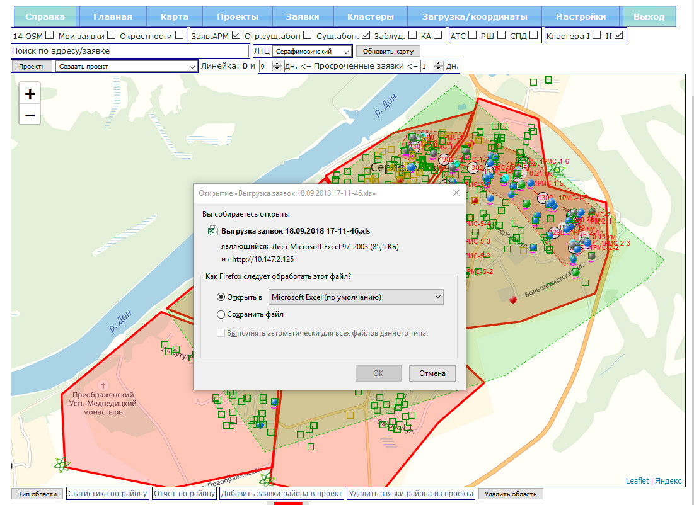
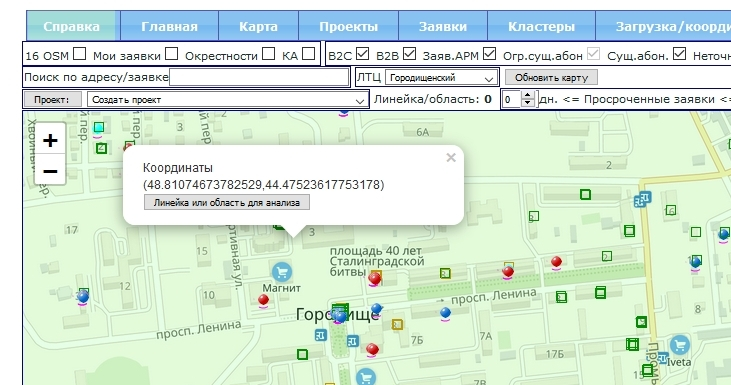
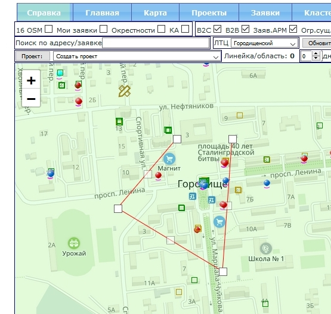
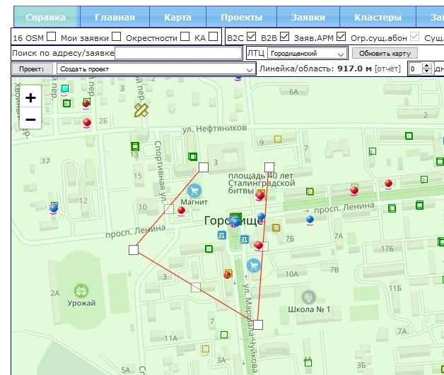
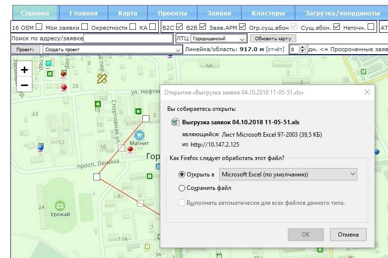
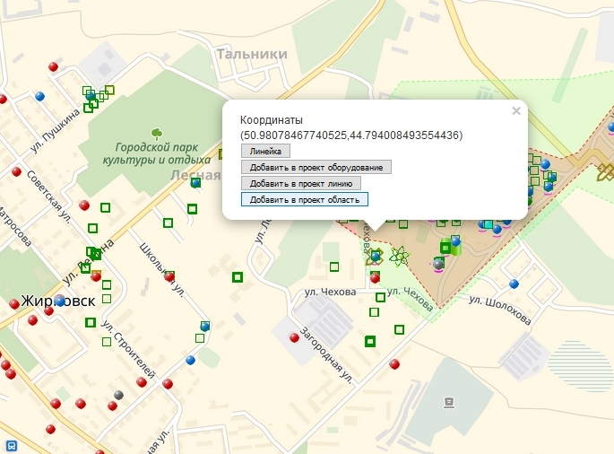
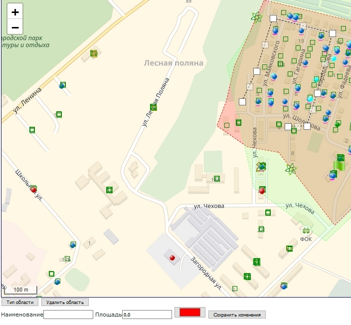
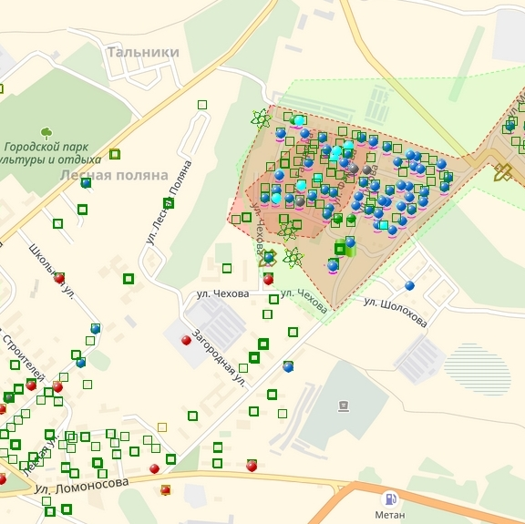
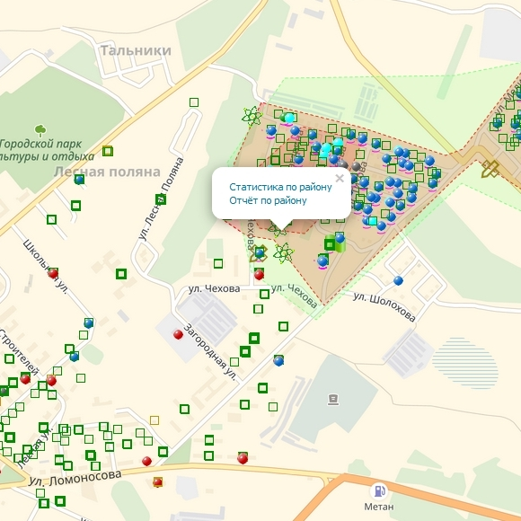

Для получения отчёта по области, ограниченной кластером или одним из районов
проекта нажимаем правой кнопкой мыши на .
Этот значок находится на грани или на углу области.

Далее выбираем "Отчёт по ...". Система предложит показать или сохранить Excel
файл с отчётом.

При необходимости получить статистику по небольшой ВРЕМЕННОЙ области, вы нажав
левую кнопку мыши, далее выбираете [Линейка или область анализа].

Рисуете на карте нужный вам многоугольник.

Нажимаете на число после "Линейка/область", затем на появвшийся "[отчёт]".

Открываете отчёт в Excel.

При необходимости получить статистику по небольшой области ПРОЕКТА, вы рисуете на
карте (нажав левую кнопку мыши) нужный вам многоугольник, который в будущем
будет принадлежать проекту.

Затем сохраняете эту область.


Для получения отчёта по области, ограниченной кластером или одним из районов
проекта нажимаем правой кнопкой мыши на .
